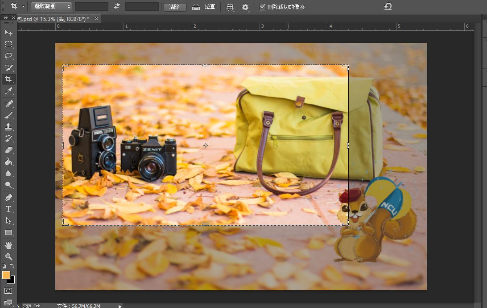

必了解的三件事情
1.原檔案另外備份，photoshop有復原次數限制，避免後製出錯請記得備份原檔案。
2.Crtl + z只能復原一次，Crtl +Alt + Z可以復原20次。
3.選取工具和切割工具不要搞混(身受其害)
一般介面操作
右邊為常用工具列，每個工具久按會出現變種的工具。(例如：快速選取工具，魔術棒工具)
Alt + 滑輪：放大圖片
Ctrl + 滑輪：左右移動畫面，當圖片超出可見範圍時使用。
解開圖層、移動圖案、置入
圖層解開後才能對圖案做移動
置入：能將其他圖片檔案用圖層的方式放進工作區域，並產生一個新圖層。
下圖可以看到小松鼠已經被置入進去右下角。
選取工具(樣式、調整邊緣)
Crtl + D 可以取消選取， Ctrl +J 可以將選取的部分另開圖層
樣式：可選擇正常、固定比例、固定尺吋三種模式
我們這邊採用16:9的固定比例還後製圖片，並調整邊緣至羽化107像素。
常用的羽化功能就在這邊，之後你可以選擇輸出方式。

裁切工具
選擇範圍後按下Enter，即可預覽切割結果，並按下右上打勾就能輸出圖案了。
這個功能可以用在很多相片切割後製的用途上，網站切版也是使用這個工具，所以需要熟練。
如果不小心切割錯了，Crtl+Alt+Z可以回復切割前狀態。